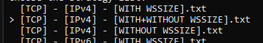
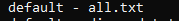
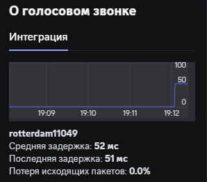

Здравствуйте!
Друзья подкинули конфиг для zapret, с которым работает голос в дискорде:
Рабочий дискорд
set BIN=%~dp0bin\
start “zapret: discord” /min “%BIN%winws.exe” ^
–wf-tcp=443 --wf-udp=443,50000-65535 ^
–filter-udp=443 --hostlist=“%~dp0list-discord.txt” --dpi-desync=fake --dpi-desync-udplen-increment=10 --dpi-desync-repeats=6 ^ --dpi-desync-udplen-pattern=0xDEADBEEF --dpi-desync-fake-quic=“%BIN%quic_initial_www_google_com.bin” --new ^
–filter-udp=50000-65535 --dpi-desync=fake,tamper --dpi-desync-any-protocol --dpi-desync-fake-quic=“%BIN%quic_initial_www_google_com.bin” --new ^
–filter-tcp=443 --hostlist=“%~dp0list-discord.txt” --dpi-desync=fake,split2 --dpi-desync-autottl=2 --dpi-desync-fooling=md5sig --dpi-desync-fake-tls=“%BIN%tls_clienthello_www_google_com.bin” :
Через GoodCheckGo я нашёл работающую стратегию которая с моим провайдером позволяет смотреть ютуб:
Рабочий ютуб
start “zapret: yt” /min “%BIN%winws.exe” ^
–wf-l3=ipv4 --wf-tcp=443 --dpi-desync=split2 --dpi-desync-split-seqovl=1 --dpi-desync-split-tls=sni --wssize 1:6
Оба скрипта, по отдельности, работают.
Пожалуйста, помогите объединить эти два скрипта в один, чтобы не приходилось жонглировать батниками. Я пробовал просто добавить стратегию из goodCheck через “–new”, но всё равно работает либо то либо другое.
Вот эту штуку wssize 1:6, по возможности, лучше не использовать. У вас не нашлось стратегии без неё?
Если просто объединить, то попробуйте так:
start "zapret" /min "%BIN%winws.exe" ^
--wf-tcp=443 --wf-udp=443,50000-50099 ^
--filter-udp=443 --hostlist="%~dp0list-discord.txt" --dpi-desync=fake --dpi-desync-repeats=6 --dpi-desync-fake-quic="%BIN%quic_initial_www_google_com.bin" --new ^
--filter-tcp=443 --hostlist="%~dp0list-discord.txt" --dpi-desync=fake,split2 --dpi-desync-autottl=2 --dpi-desync-fooling=md5sig --dpi-desync-fake-tls="%BIN%tls_clienthello_www_google_com.bin" ^
--filter-udp=50000-50099 --dpi-desync=fake --dpi-desync-any-protocol --dpi-desync-cutoff=d4 --new ^
--filter-tcp=443 --dpi-desync=split2 --dpi-desync-split-seqovl=1 --dpi-desync-split-tls=sni --wssize 1:6
И давно порты дискорда достигли почти 60к? 
increment и pattern не работают без --dpi-desync=fake,udplen
udplen проглядел, т.к. просто скопипастил строку. Порты для дискорда умышленно поставил так, т.к. тут кто-то недавно на форуме писал, что у него голос по порту 50600 идет. Так что хз.
я дико извиняюсь, а если убрать –filter-udp=443 , то дис перестает работать?
я впринципе без нее обхожусь…
Да тут много чего пишут )
Проще было просто конфиг Flowseal для диса скопировать, он вроде еще работает. А, хотя это он и есть.
Тогда последнюю строчку лучше так:
--filter-tcp=443 --hostlist="%~dp0list-general.txt" --dpi-desync=split2 --dpi-desync-split-seqovl=1 --dpi-desync-split-tls=sni --wssize 1:6
И проверь двойные тире в конфиге своем, их форум в 1 превратил, походу
@uwu Кому-то можно и без нее, а у кого-то все намного хуже
Точно. Там и кавычки были сломаны, а вот тире я проглядел. Автор не удосужился нормально текст вставить.
Автор Запрета уже не раз писал, что
wssize 1:6
лучше не использовать. И вообще мой совет: никогда не ориентируйтесь в Блокчеке на SUMMARY (РЕЗУЛЬТАТ). Никогда! Он шляпу часто выдает с тем же wssize.
Мотайте и смотрите сам процесс Блокчека и копируйте ВСЕ значения с пробиванием - надписью !!! AVAILABLE !!! (ДОСТУПНО/ПРОБИВАЕТ).
Выпишите все стратегии с такой надписью - и затем просто подставляйте по очереди с проверкой в браузере заблокированных сайтов.
Мотайте и смотрите сам процесс Блокчека и копируйте ВСЕ значения с пробиванием - надписью !!! AVAILABLE !!! (ДОСТУПНО/ПРОБИВАЕТ).
Поиск по логу GoodCheckGo не нашёл ни одного такого. Стратегии без wssize сейчас ищу.
Спасибо за быстрый ответ!
С Вашим конфигом работает ютуб, но дискорд не может подключиться к RTC.
Стратегии без wssize сейчас ищу.
Объясните, пожалуйста, несведущему, что делает этот wssize, и чем он плох?
ко всем серверам или только определенным? речь идет о стране в наименовании сервера
уменьшит скорость скачивания примерно в 10 раз, помимо этого еще и твич поломает
Попробуйту поменять
--filter-udp=50000-50099 --dpi-desync=fake --dpi-desync-any-protocol --dpi-desync-cutoff=d4 --new ^
на
--filter-udp=50000-50099 --dpi-desync=fake --dpi-desync-any-protocol --dpi-desync-cutoff=d4 --dpi-desync-fake-unknown-udp=0x00 --new ^
или на
--filter-udp=50000-50099 --dpi-desync=fake --dpi-desync-any-protocol --dpi-desync-cutoff=d4 --dpi-desync-fake-unknown-udp="%BIN%quic_initial_www_google_com.bin" --new ^
С обеими новыми вариантами работает ютуб, не подключает к голосовому в дискорде.
Булькает “Подключение к RTC” и потом сразу “Не установлен маршрут”, и снова пытается подключиться.
GoodCheck нашёл стратегии без wssize
Спойлер
Strategies with 18/41 successes:
[–wf-l3=ipv4 --wf-tcp=443 --dpi-desync=split2 --dpi-desync-split-seqovl=3 --dpi-desync-split-pos=4]Strategies with 21/41 successes:
[–wf-l3=ipv4 --wf-tcp=443 --dpi-desync=split2 --dpi-desync-split-seqovl=1 --dpi-desync-split-tls=sniext]Strategies with 23/41 successes:
[–wf-l3=ipv4 --wf-tcp=443 --dpi-desync=split2 --dpi-desync-split-seqovl=1 --dpi-desync-split-tls=sni]
речь идет о стране в наименовании сервера
Не пишет названия страны и имя сервера.
уменьшит скорость скачивания примерно в 10 раз, помимо этого еще и твич поломает
Падения скорости пока-что не заметил, возможно при больших загрузках будет заметно.
Наличие твича не критично, не пользуюсь.
Надо проверять как можно больше сайтов и как можно больше стратегий…А то вижу что ты гуглвидео по HTTPS трогаешь. Его лучше по UDP прогнать
Спойлер

Спойлер

Там внизу есть вариант с UDP, может его лучше?
В большинстве своем это выработка стратегии на просмотр видео в QUIC/HTTPS3
Дискорд в удп пинать - бесполезно по 443 порту
Сейчас поставлю прогоняться этот вариант, займёт несколько часов. Отпишусь когда будут результаты. Спасибо!
Не забудь все офнуть из обходов и впн убрать
Результат прогона по UDP
--wf-udp=443 --dpi-desync=fake --dpi-desync-fake-quic=Payloads\default_udp.bin --dpi-desync-repeats=6
Переписать и пейлоад замеить… Будет стратегией для QUIC
В принципе тот же конфиг Флоу получается, с 6 репитами )
Спойлер
start “zapret: discord” /min “%BIN%winws.exe” ^
–wf-tcp=443 --dpi-desync=split2 --dpi-desync-split-seqovl=1 --dpi-desync-split-tls=sni
–wf-udp=443,50000-65535 ^
–filter-udp=443 --hostlist=“%~dp0list-discord.txt” --dpi-desync=fake --dpi-desync-udplen-increment=10 --dpi-desync-repeats=6 ^ --dpi-desync-udplen-pattern=0xDEADBEEF --dpi-desync-fake-quic=“%BIN%quic_initial_www_google_com.bin” --new ^
–filter-udp=50000-65535 --dpi-desync=fake,tamper --dpi-desync-any-protocol --dpi-desync-fake-quic=“%BIN%quic_initial_www_google_com.bin” --new ^
–filter-tcp=443 --hostlist=“%~dp0list-discord.txt” --dpi-desync=fake,split2 --dpi-desync-autottl=2 --dpi-desync-fooling=md5sig --dpi-desync-fake-tls=“%BIN%tls_clienthello_www_google_com.bin”
попробуй так.
Форум побил кавычки и двойное тире. Пытаюсь поправить
Да откуда вы это тащите то вечно? Уже из всех утюгов сказано, что происходит на портах 50к-65к при этой стратегии. Сам Болван писал. Но нет, упорно постят и постят.
–filter-udp=50000-65535 --dpi-desync=fake,tamper --dpi-desync-any-protocol --dpi-desync-fake-quic=“%BIN%quic_initial_www_google_com.bin”
Не надо это использовать. Никогда.
те, кто находятся в войсе могут посмотреть
Спойлер

Так это Я его конфиг совместил. Как он просил, пусть сам уменьшит порт
Да тут не в порте дело. Тампер тут не нужен, он не для этого. И нужен cutoff а то такая серь начнется на эти порты, что офигеет все, что туда попадет.
Супер конфиг для любой сети
–filter-udp=1-65535 --dpi-desync=fake,tamper --dpi-desync-any-protocol --dpi-desync-fake-quic=“%BIN%quic_initial_www_google_com.bin --dpi-desync-repeats=255
Я думаю так быстрее
Я вчера игрался взял болвановский конфиг. Его редактировал. Одну строку вообще удалил. И одну строку взял с гудчека ори. Тоже все открывает.
delete на всякий случай
Как бы рад) помочь сети почувствовать всю её тленность
--filter-udp=50000-50100 --dpi-desync=fake --dpi-desync-any-protocol --dpi-desync-fake-quic="%BIN%quic_initial_www_google_com.bin" --dpi-desync-cutoff=n3
Вот так это должно выглядеть.
Либо так
--filter-udp=50000-50100 --dpi-desync=fake --dpi-desync-any-protocol --dpi-desync-fake-unknown-udp="%BIN%quic_initial_www_google_com.bin" --dpi-desync-cutoff=n3
Можно репитов навалить дополнительно к обоим вариантам --dpi-desync-repeats=2 и выше подбирать, пока не заработает.
В итоге у меня мало чего получилось по советам, но удалось своими руками подобрать конфиг при котором будет работать и дискорд и ютуб. Разложил построчно для удобочитаемости.
Умудрился даже сделать без wssize.
Конфиг Дискорд + ютуб
start "Zapret: Discord+Youtube" /min "%BIN%winws.exe" ^
--wf-tcp=443 ^
--wf-udp=443,50000-65535 ^
--filter-udp=443 ^
--hostlist="%~dp0list-discord.txt" ^
--dpi-desync=fake ^
--dpi-desync-udplen-increment=10 ^
--dpi-desync-repeats=6 ^ ^
--dpi-desync-udplen-pattern=0xDEADBEEF ^
--dpi-desync-fake-quic="%BIN%quic_initial_www_google_com.bin" ^
--new ^
--filter-udp=50000-65535 ^
--dpi-desync=fake,tamper ^
--dpi-desync-any-protocol ^
--dpi-desync-fake-quic="%BIN%quic_initial_www_google_com.bin" ^
--new ^
--filter-tcp=443 ^
--hostlist="%~dp0list-discord.txt" ^
--dpi-desync=fake,split2 ^
--dpi-desync-autottl=2 ^
--dpi-desync-fooling=md5sig ^
--dpi-desync-fake-tls="%BIN%tls_clienthello_www_google_com.bin" ^
--new ^
--filter-udp=50000-50100 ^
--dpi-desync=fake ^
--dpi-desync-any-protocol ^
--dpi-desync-fake-quic="%BIN%quic_initial_www_google_com.bin" ^
--dpi-desync-cutoff=n3 ^
--new ^
--wf-l3=ipv4 ^
--wf-tcp=443 ^
--dpi-desync=split2 ^
--dpi-desync-split-seqovl=1 ^
--dpi-desync-split-tls=sni
Всем спасибо за участие и помощь в покорении злое**чего дпи!
У тебя в выводе очень интересные пересечения стратегий.
Просто там одно поглощает другое и до … некоторых стратегий доходит, то что было отброшено другими
Опять неправильно. Нужно вот так:
Спойлер
start "Zapret: Discord+Youtube" /min "%BIN%winws.exe" ^
--wf-tcp=443 --wf-udp=443,50000-50100 ^
--filter-udp=443 ^
--hostlist="%~dp0list-discord.txt" ^
--dpi-desync=fake ^
--dpi-desync-repeats=6 ^
--dpi-desync-fake-quic="%BIN%quic_initial_www_google_com.bin" ^
--new ^
--filter-tcp=443 ^
--hostlist="%~dp0list-discord.txt" ^
--dpi-desync=fake,split2 ^
--dpi-desync-autottl=2 ^
--dpi-desync-fooling=md5sig ^
--dpi-desync-fake-tls="%BIN%tls_clienthello_www_google_com.bin" ^
--new ^
--filter-udp=50000-50100 ^
--dpi-desync=fake ^
--dpi-desync-any-protocol ^
--dpi-desync-fake-quic="%BIN%quic_initial_www_google_com.bin" ^
--dpi-desync-cutoff=n3 ^
--new ^
--filter-tcp=443 ^
--dpi-desync=split2 ^
--dpi-desync-split-seqovl=1 ^
--dpi-desync-split-tls=sni
По итогу имеем - соединения дискорда (tcp и udp) обрабатываются через хостлист, ютуб и остальное сваливается на последний фильтр --filter-tcp=443 ^ Не лучшее решение сплитить и делалать sequence overlap каждому пакету HTTPS, ну уж хоть как-то ) QUIC на ютубе будет работать только если в discord-list.txt есть его домены, иначе фигу. Но, скорее всего, все домены ютуба засунуты в вышеупомянутый хостлист. Что тоже не лучшее решение. Забанят стратегию (ну а вдруг?) и рухнут сразу и ютуб и дискорд и сюда не зайдешь, совета спросить. Только через впн. Ну разве что спасет последняя стратегия.
Шикарный конфиг, кстати. И порты не срёт говной. Рекомендую!
Проверил Ваш конфиг.
С ним работает ютуб но не работает дискорд, увы.
list-discord.txt не изменял, ютубовских доменов в нём нет.
с таким конфигом ютуб не может работать, разве что стартовую страницу прогрузит
выглядит как то что в системе есть работающий экземпляр либо запрета либо gdpi
надо смотреть все службы и выгружать виндиверт из драйверов
Не работает дискорд - понятие растяжимое. Что именно не работает - не грузится вообще, голос не работает?
ТРЭШ ФЛУД ДЕТЕКТЕД. Он неискореним, похоже.
ЭТУ ДРЯНЬ использовать НЕЛЬЗЯ
Параметры udplen и tamper бесполезны